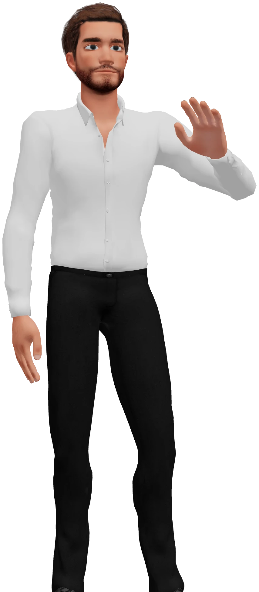
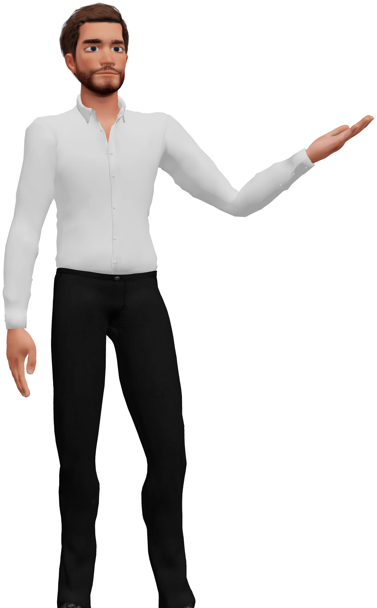
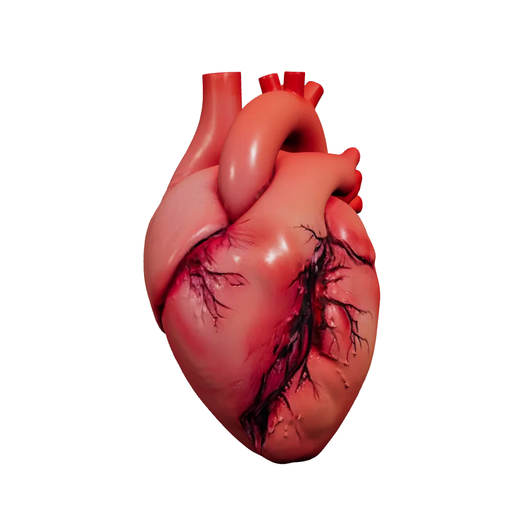
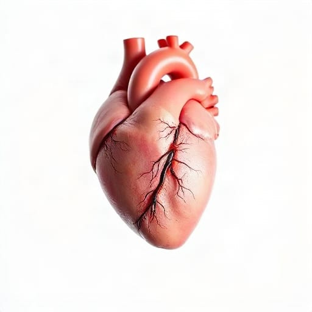
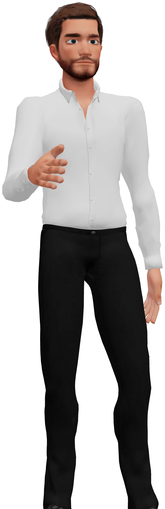

Grades 6 to 8
One teacher.One student.Every kid.
Your own AI teacher explains the topic you pick out loud, shows it on the board, then checks that it stuck.

Real output from the heart demo lesson.



It Builds a Model You Can Turn
When a topic has a shape, the lesson's picture becomes a 3D model in the room. Drag it to turn it.
The picture and the model are real output from the heart demo lesson. The build between them is an illustration.
It Remembers What You Know
Every concept comes back just before you would forget it, and the next lesson starts from what you have mastered.

One Concept, Three Weeks
Your Map
A real course, its first 20 concepts. Lit ones are mastered; the ringed one is next.
Example learner. The map is a real course's concepts; the progress is illustrative.
Step Into the Classroom
Everything above, together in one room. Look around while your teacher teaches the heart.

Live 3D, the product's own classroom. The lesson in it is the real heart demo lesson.